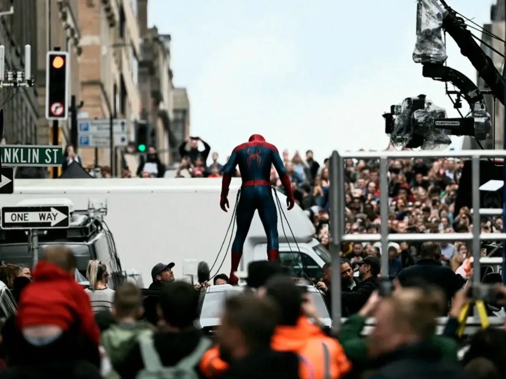

Un nuevo comienzo: Han pasado cuatro años y Peter vive completamente solo, apartado de la vida de quienes ama para protegerlos. La enorme presión de ser un héroe anónimo desencadena un cambio físico en sus poderes que le cuesta controlar. Debe enfrentar un nuevo patrón de crímenes y a un poderoso villano al que nadie puede ver. Y aunque el mundo olvidó a Peter Parker, él sigue recordando a todos sus seres queridos mientras intenta equilibrar su identidad. En lo personal, esta película me pareció espectacular, desde las tomas, al vestuario, la trama, la resolución, la elección de banda sonora, todo. Incluso, fui a verla 2 veces al cine. La primera vez, salí anonadada, sin poder creer lo que acababa de ver.
Sinopsis:
Principales locaciones de rodaje
Glasgow, Escocia:
Más de 60 calles del centro (incluyendo Bothwell Street) se cerraron y transformaron con taxis amarillos, señales de tránsito estadounidenses y utilería neoyorquina para filmar grandes escenas de acción y persecuciones.
Pinewood Studios, Inglaterra:
Se utilizaron los icónicos estudios para el rodaje de escenas en interiores y la recreación de decorados que coincidieran con los exteriores de Glasgow.
Otras localidades en Inglaterra:
El rodaje también incluyó zonas de Londres, Hertfordshire, Hampshire (como Basingstoke), Kent, Dorset y Surrey.
Producción
Director:
Destin Daniel Cretton
Guionistas:
Chris McKenna and Erik Sommers
Productores:
Kevin Feige, Amy Pascal, Avi Arad, and Rachel O'Connor
Protagonistas:
Tom Holland, Zendaya, and Sadie Sink


